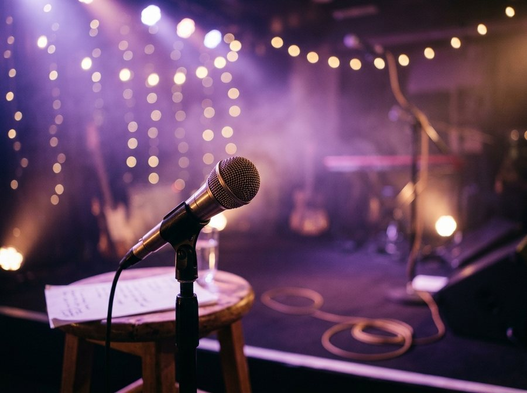
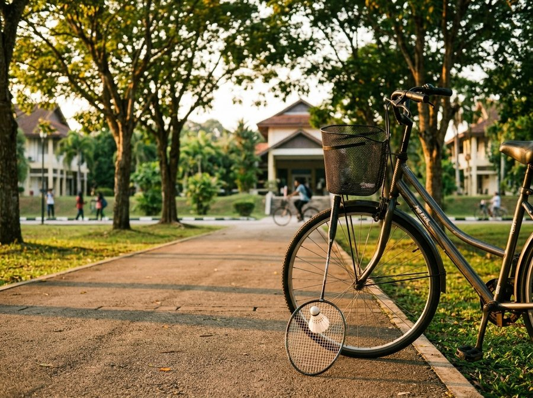
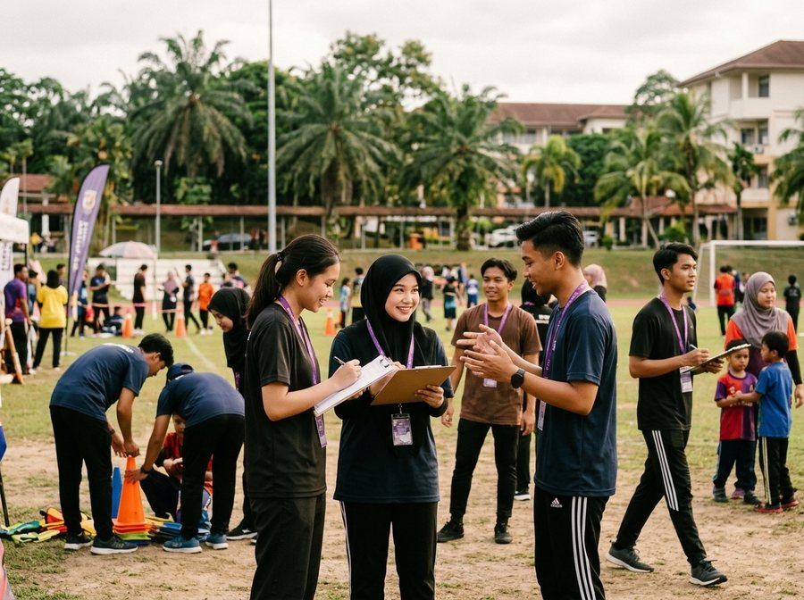
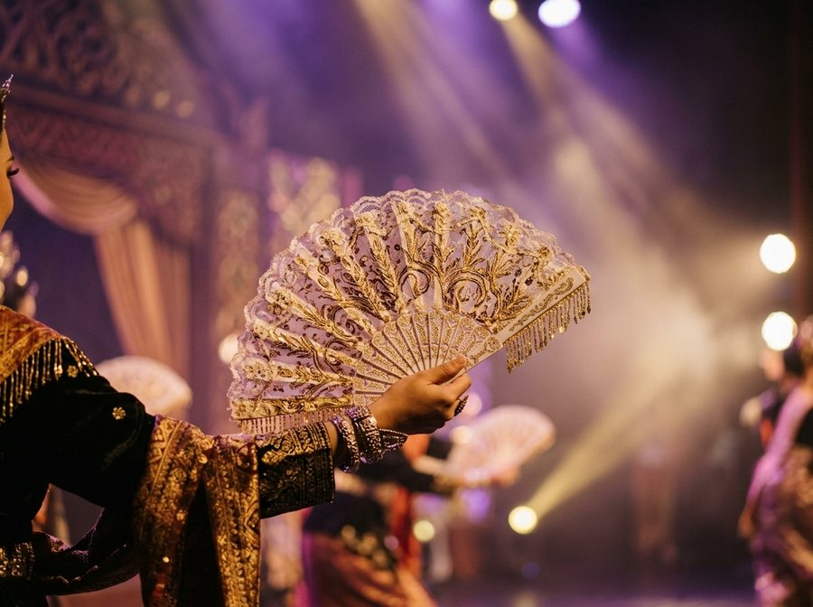
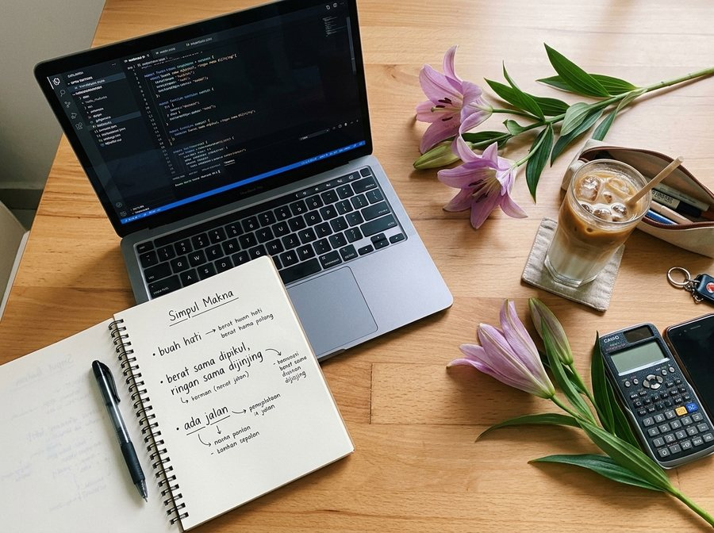
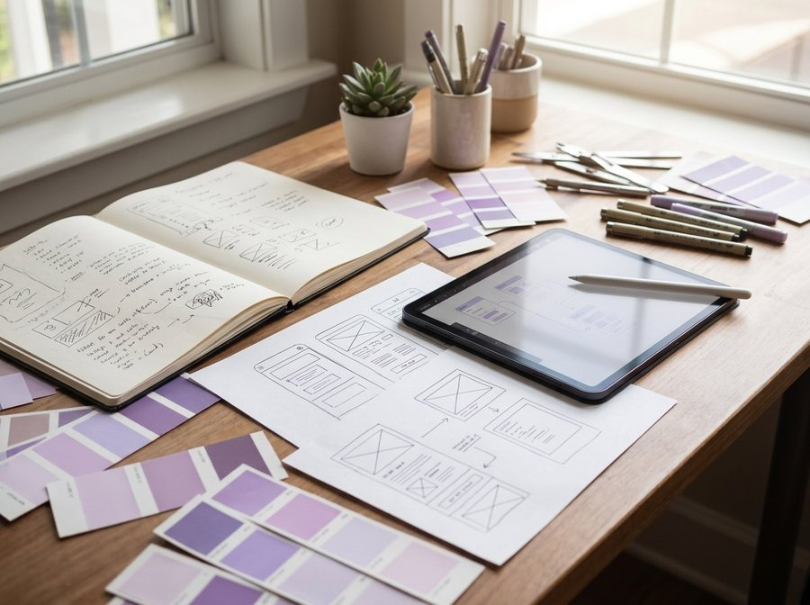

Karaoke & Concerts
A music lover at heart, singing favourites at karaoke nights and chasing the energy of live concerts.
Read note →BEYOND THE CLASSROOM
From karaoke nights and campus sports to volunteering, cultural dance, and weekend coding, these are the things that keep me curious and inspired.

A music lover at heart, singing favourites at karaoke nights and chasing the energy of live concerts.
Read note →
Staying active outside the classroom through badminton games, evening cycling, and heritage hikes.
Read note →
Volunteer Secretariat for SUKMA Selangor 2026 and community programmes such as Secebis Kenangan.
Read note →
Represented MISC in cultural dance performances at UUM and won Third Place at TM CLAWÉ 2.0.
Read note →
Building small web and NLP projects for fun, from Simpul Makna to corpus explorations in AntConc.
Read note →
Designing friendly interfaces and prototypes in Figma, including the EcoBalance project.
Read note →PERSONAL STORY